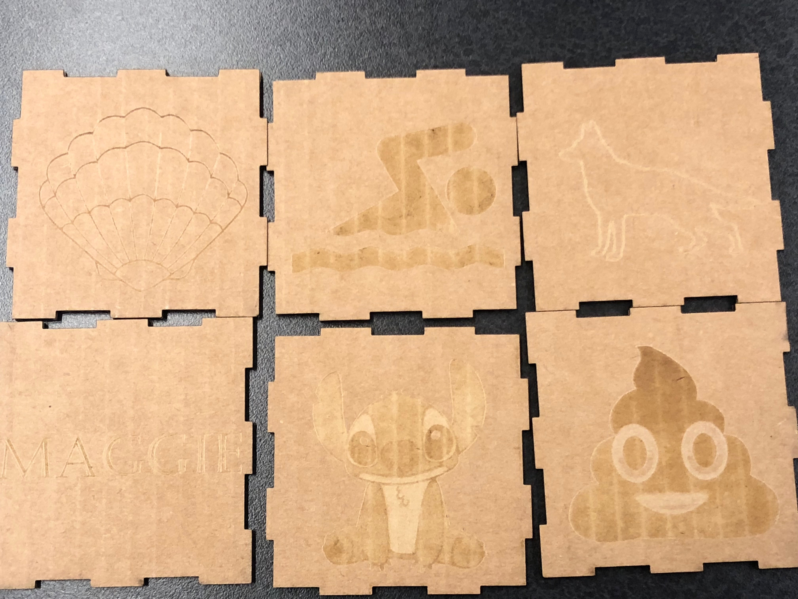
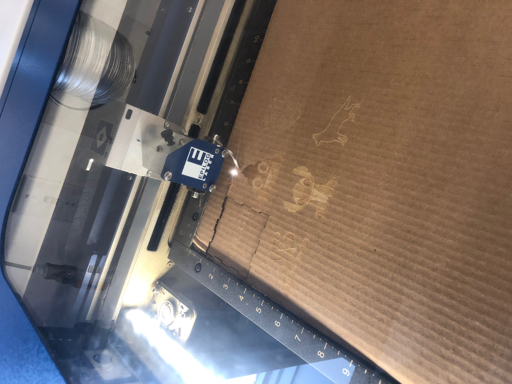
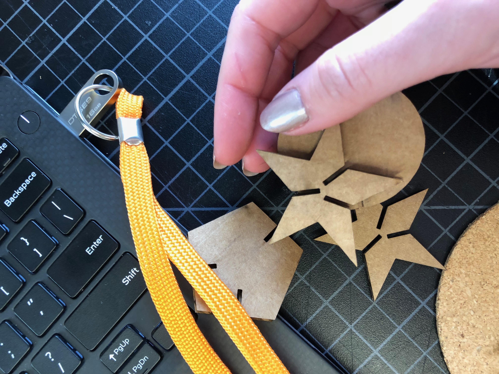
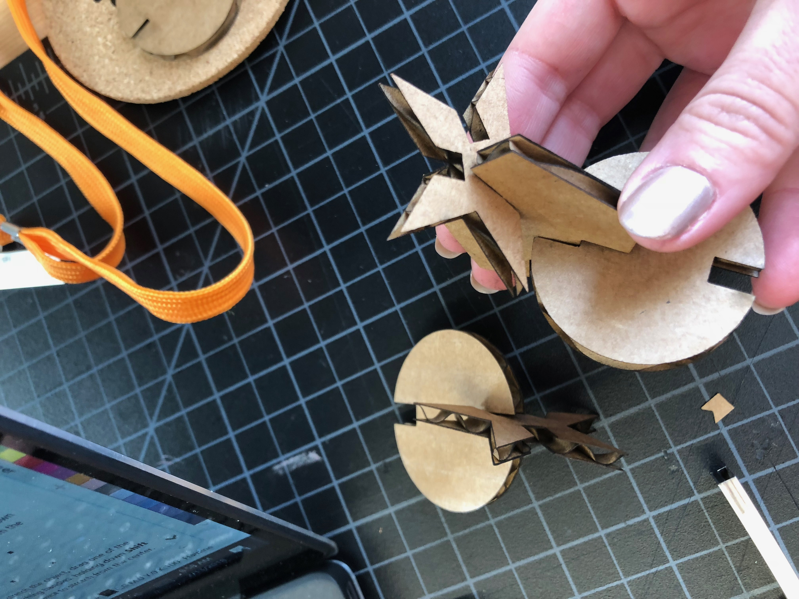
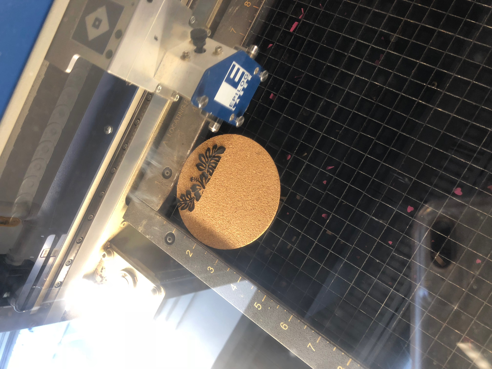
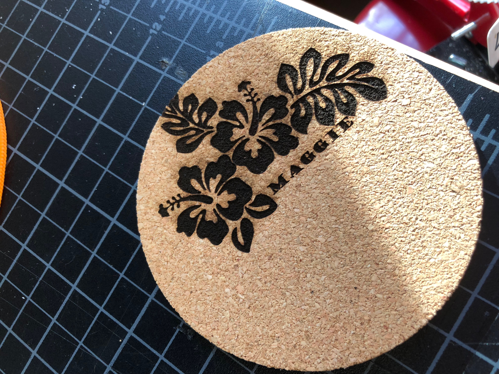

Rotation 4: Laser and Vinyl Cutter
Project Description:
For this rotation, we learned the difference between raster and vectors. To raster means to etch the design on the cardboard or material you are using, vector is to cut through the material to make the design. First, using the MakerCase download I cut out a small box made of cardboard with designs that described me on each face of the box. I used CorelDraw to make the file and printing it with the laser cutter was easy. I took the six pieces of the box home and glued them together.


Next, I created three different shapes on CorelDraw with cut outs on them so that when put together, they fit snuggly to make a structure. I drew a few rectangles on each shape for the spot that would be cut out at as a slit for placing the different shapes together. The first time I printed the shapes, the slit was too small so I had to fix the file by making the slits bigger and reprint the shapes out. When I did that, the shapes finally fit together! The first picture shows the original shape cut outs that did not work, but the second picture shows the shapes that did fit together.


After those two, we were given four different tasks and had to pick two to complete. I chose to do the rastered design on a cork coaster. I copied an image of a flower onto CorelDraw and wrote my name with in the flower as well. It was hard to center the design in the middle of the coaster, but it still looks very cool.


The second assignment I chose was making a living hinge. I downloaded a living hinge design off a website and created three pieces that could be put together after being printed. When I printed the hinge out, it did not work out very well. It looked okay, but was a struggle to get the full design off the rest of the cardboard that I used to cut. Then, the hinge started breaking and did not look as well as I hoped.